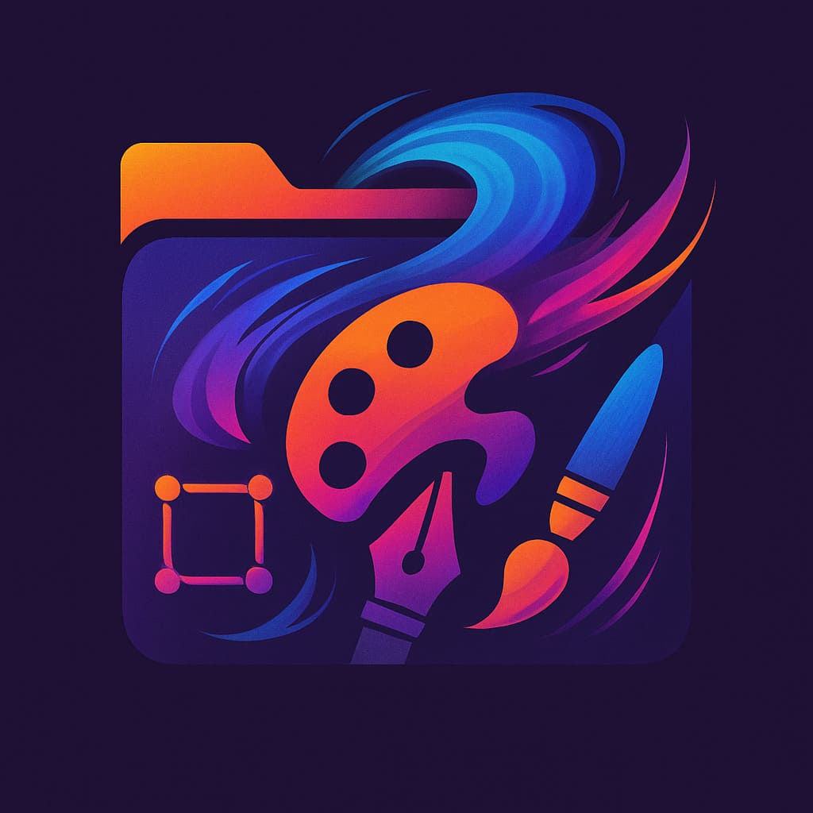
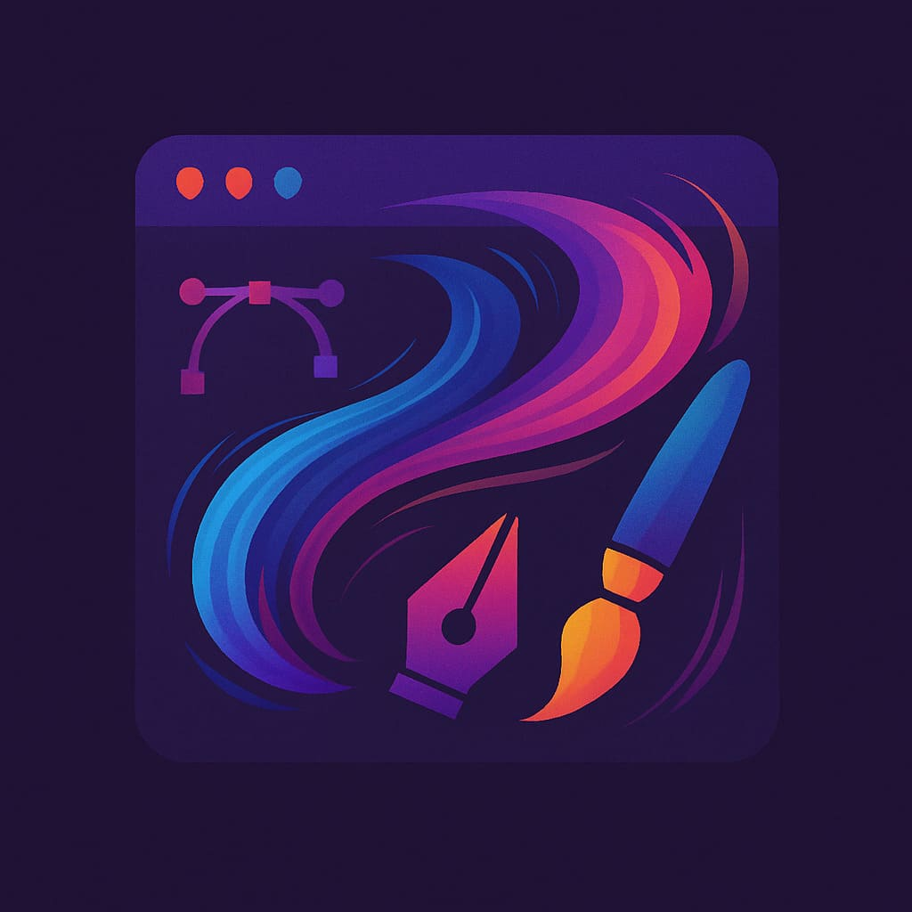

Emprendimiento
Hay varias formas de emprender en Argentina, teniendo en cuenta que si bien el emprendedorismo o entrepreneurship puede ser arriesgado, muchas veces esa iniciativa resulta ser la clave en la industria del entretenimiento, apostando tal vez por un nicho poco explotado. Por otro lado se estima que a futuro puede haber un mercado laboral, compuesto mayormente por trabajadores inpependientes o autogestionados que por empleados asalariados en relación de dependencia.

Marca Personal
El branding personal o marca personal es una estrategia comercial en la que una persona se posiciona como la mejor opción para satisfacer una necesidad específica a través de un servicio. Su reputación dependerá de la calidad de su trabajo, su experiencia y el valor que aporta a sus clientes. Constituye una forma de trabajo freelance.
El freelancing es flexible en cuanto a horarios y proyectos a tomar según fechas, siendo común dentro de la industria del entretenimiento el tener jornadas intensivas, es decir, que se trabaje mas horas de lo habitual como a su vez el microshifting (horario cortado), pudiendo organizar la rutina personal.
Como emprendedores o entrepreneurs para establecer tarifas adecuadas y presupuestar, es fundamental conocer el mercado y definir una estrategia de precios que refleje su nivel de especialización y demanda local e internacional como asi también poder definir un rider técnico que de cuenta de una propuesta preseupuestaria que contenga todos los elementos necesarios por el artista para llevar a cabo su trabajo como asi también la organización y la programación de eventos.
Tarifario
"Tenemos 151 tarifas indexadas para servicios de Diseño audiovisual, Diseño Gráfico, Marketing, Programación."
Recursos Culturales
"Somos un emprendimiento cultural independiente, herramientas y servicios para artistas, emprendedores, gestores y organizaciones del arte y la cultura."
Emprende Cultura
"EMPRENDE CULTURA es una revista digital hecha por y para artistas, gestores, emprendedores, organizaciones y proyectos culturales."
Akultura
"AKULTURA nace como necesidad de apoyar a gestores culturales y artistas a poder desarrollar una agenda cultural en las comunidades que habitan."

Portafolio
Si bien lo ideal es crear un sitio web propio, por cuestiones presupuestarias es normal iniciar con herramientas gratuitas y desarrollar un portfolio profesional es clave para mostrar la experiencia adquirida y los trabajos realizados. Es recomendable crear un perfil en redes como LinkedIn para la búsqueda laboral, hacer networking o red de contactos y utilizar rrss, plataformas como Behance de Adobe, o un enlazador como Linktree para organizar y exhibir el contenido de manera efectiva.
Herramientas
.ART
"ART es la única zona de dominio creada especialmente para la comunidad creativa global."
Adobe Behance
"Una plataforma integral para ayudar a empleadores y creadores a navegar el mundo creativo, desde descubrir inspiración hasta conectarse entre sí." Traducido con Kagi Translate.
Adobe Portfolio
Magníficos sitios web de portafolios, gratis con Creative Cloud."
Artstation
"ArtStation te ofrece una forma sencilla pero poderosa de mostrar tu portafolio y ser visto por las personas adecuadas en la industria." Traducido con Kagi Translate.
Sketchfab
"La plataforma líder para 3D y AR en la web. Gestiona tus activos 3D. Distribuye experiencias 3D y AR. Colabora con otros. Muestra tu trabajo." Traducido con Kagi Translate.
Dribble
"El destino mundial para el diseño." Traducido con Kagi Translate.
Vgen
"Te ayudamos a exhibir y gestionar tu arte y negocios artísticos mientras te conectamos con una comunidad de artistas, clientes y amigos." Traducido con Kagi Translate.
Flicker
"El mejor lugar para ser un fotógrafo en línea" Traducido con Kagi Translate.
Directorios Argentina Creativa
"Los Directorios Argentina Creativa son una plataforma digital diseñada para conectar al mundo con el talento innovador de las industrias creativas argentinas."
Registro Federal de Cultura
"El Registro Federal de Cultura es la primera plataforma que unifica, transparenta y democratiza el acceso a las convocatorias de la Secretaría de Cultura de la Nación."
CodePen
"CodePen es un entorno de desarrollo social. En esencia, te permite escribir código en el navegador y ver los resultados a medida que lo construyes." Traducido con Kagi Translate.
Playbook
"Piensa en Playbook como tu centro creativo: una plataforma de gestión de archivos todo en uno diseñada tanto para creativos individuales como para equipos." Traducido con Kagi Translate.
Por otro lado dentro del rubro si bien suelen publicarse avisos vinculados a propuestas laborales artísticas dentro de sistios como LinkedIn, Bumeran, CompuTrabajo, etc, en su lugar hay plataformar específicas como por ejemplo:
Alternativa
"La escena independiente, las artes escénicas y performáticas viven en Alternativa. Comunidad en escena. Teatro. Danza. Performance. Experiencias."
Becasting
"Ofertas de empleo artistas para figurantes, actores, cantantes, modelos, casting para niños, músicos , humoristas."
Backstage
"Backstage conecta proyectos creativos con el mejor talento. Ayudamos a contratar personal para más de 50.000 proyectos creativos al año en cine, televisión, anuncios, contenido de marca, teatro y marketing experiencial." Traducido con Kagi Translate.
WASO
"WASO es tu socio digital, llevamos tu negocio hacia nuevos volúmenes de venta y hacemos que puedas enfocarte en lo que de verdad te gusta, expandiendo tu marca en linea de forma diferenciada."

Programas y Aplicaciones
Existe software de todo tipo: gratis, con períodos de prueba limitados (free trial o demo) o ilimitados, de pago completo o de código abierto. Estas últimas permiten conocer su funcionamiento interno y modificar el código para mejorar sus capacidades. Por otro lado existen soluciones gratuitas pero con marca de agua, es decir con un logo que graba la propiedad intelectual de origen, como las marcas de agua visuales en imágen y video y las de audio en música, pistas sonoras, etc.
En el ámbito de la telefonía, una alternativa destacada a Android sin los servicios de Google es LineageOS. En el mundo de la computación, es posible encontrar reemplazos para Windows sin renunciar a aplicaciones de uso cotidiano. Entre las distribuciones de GNU/Linux, la más popular es Ubuntu, aunque existen muchas otras que pueden adaptarse a necesidades específicas. Cabe mencionar que, al tratarse de software comunitario, no cuentan con soporte oficial, sino con el respaldo de comunidades voluntarias.
Una iniciativa relevante en este ámbito es Cyber Cirujas, una organización que brinda capacitación sobre reciclaje de teléfonos, computadoras y otros dispositivos, lo que puede ser útil para quienes tienen presupuestos limitados pero necesidades profesionales.
Si bien la mayoría de los usuarios utilizan Windows en computadoras y Android en teléfonos debido a su accesibilidad, existen alternativas que pueden ofrecer una experiencia similar sin sacrificar demasiado. En contraste, los dispositivos de Apple operan dentro de un ecosistema cerrado y costoso, con menos opciones de software gratuito.
AlternativeTo
"AlternativeTo es un servicio gratuito que te ayuda a encontrar mejores alternativas a los productos que amas y odias." Traducido con Kagi Translate.
GCam y fotografía computacional
GCam es la aplicación de cámara utilizada en los teléfonos Nexus y Pixel de Google. Gracias a los avances en fotografía computacional, permite obtener resultados superiores a los de muchas cámaras nativas, incluso en dispositivos de gama media.
Existen versiones no oficiales de GCam adaptadas a distintas marcas de teléfonos. Una herramienta útil en este sentido es Gcamator, una app que permite instalar versiones compatibles de GCam en ciertos modelos sin necesidad de rootear el dispositivo.
Si bien la democratización en el acceso a dispositivos y herramientas multimedia permite que cada vez más personas generen y creen contenido de manera más económica, esto no significa que más personas se dediquen necesariamente a ello. En cambio, esta accesibilidad potencia el trabajo de quienes ejercen oficios y profesiones artísticas.
Canva
"Con Canva, es muy fácil crear y compartir diseños profesionales."
Adobe Express
"La aplicación para crear cualquier cosa de forma rápida y sencilla."
Financiamiento
Existen diversas formas de obtener financiamiento, siendo el crowdfunding y el mecenazgo colaborativo algunas de las más utilizadas. Dependiendo del tipo de proyecto, el respaldo puede provenir del aprecio del público o del atractivo que represente para inversores, según estudios de mercado y proyecciones de retorno de inversión (ROI).
Cafecito
"Cafecito es una plataforma de crowdfunding que busca unir a creadores de contenido, ONGs o proyectos con gente que quiera aportar a lo que hacen."
Matecito
"Matecito es una plataforma de financiamiento colectivo que puede ser utilizada por cualquier persona que desee recibir donaciones de una manera sencilla y con la menor comisión."
The Rabbit Hole
"¡Somos #TheRabbitHole! Una incubadora y aceleradora de #videojuegos que viene a impulsar la industria de la región. Además, contamos con un fondo de inversión específico para el sector."
Asimismo, en el entorno Web3, es posible acceder a financiamiento a través de la tokenización, lo que permite nuevas oportunidades de inversión y participación descentralizada.
Bluebit
"Somos la única (comunidad financiera) que desbloquea oportunidades patrocinando proyectos y generando ingresos a partir de la tokenización de acciones."
Facturación
El régimen se divide en Monotributo promovido (el cual no aporta a obra social y casi tampoco al aporte previsional) y social (ya puede tener una obra social y puede conformarse en cooperativas) como promotores de facturación para economías populares al cual podríamos llamar extraoficialmente como "Régimen Popular". El Régimen Simplicado (monotributistas, cuentapropistas) comprende las categorías de la A a la K, y no requieren servicios de contaduría aunque no pueden conformar sociedades comerciales. Y finalmente el Régimen General (respontables inscriptos, autónomos y sociedades) los cuales tributan más y requieren contabilidad, además de que no pueden tener Obra Social y deben solicitar una Prepaga.
Monotributo en ARCA (exAfip)
"Un régimen para pequeños contribuyentes, que unifica el pago de IVA y Ganancias con los aportes jubilatorios y la obra social."
SAS
"La Sociedad por Acciones Simplificada es un nuevo tipo de sociedad: se forma más rápido y con trámites más simples."
Cooperativas de Trabajo Limitadas
"El trámite de constitución de cooperativas de trabajo está segmentado según la cantidad de personas asociadas al momento de la fundación ya que esto determinará la conformación del Consejo de Administración"
Prestación de servicios al Exterior
"Las exportaciones de servicios son las prestaciones realizadas en el país, sin que medie relación de dependencia y cuya utilización económica se efectúa en el exterior."
Si deciden facturar localmente o internacionalmente deben saber que estarán por su cuenta, fuera de cualquier convenio colectivo, deberán fijar una tarifa plana por su trabajo con lo cual pueden consultar a un contador, colegios profesionales, etc.

Asociación
Además de poder ser freelancer, la asociación permite emprender en conjunto, repartiendo roles en función a especialidades, capital, tiempo, etc como asi también podes continuar un proyecto ya iniciado junto a
Organización Autónoma Descentralizada
Una DAO (sigla en inglés de Decentralized Autonomous Organization) es una forma de organización que funciona mediante reglas codificadas en contratos inteligentes (smart contracts) sobre una cadena de bloques (como Ethereum, por ejemplo), lo que permite su gestión sin necesidad de una autoridad central o intermediarios.
- Descentralización: No hay un jefe o una entidad central. Las decisiones se toman colectivamente por los miembros mediante votaciones.
- Autonomía: Las reglas están predefinidas en código y se ejecutan automáticamente sin intervención humana, salvo por el voto de los participantes.
- Gobernanza por fichas (tokens): Los participantes suelen tener tokens de gobernanza que les dan derecho a votar sobre propuestas (como inversiones, cambios en las reglas, etc.).
- Transparencia: Todo lo que ocurre en la DAO (propuestas, votos, transacciones) es público y verificable en la blockchain.
- Finanzas compartidas: El capital (por ejemplo, fondos en criptomonedas) está controlado colectivamente y se gestiona según lo decidan los miembros.
Club Argentino de Tecnología
"Somos una Organización Autónoma Descentralizada de locos por la innovación que quiere cambiar el mundo, sí, desde Argentina."
Si bien CAT no es una DAO artística como tal si es un ejemplo argentino que podría aplicar tecnología al arte.
Descentraland DAO
"Construido sobre tecnología blockchain, ofrece una próspera economía de activos digitales donde los creadores conservan el 97.5% de sus ganancias, la mayor participación en los ingresos de la industria, con un 2.5% reinvertido en la comunidad a través de la DAO de Decentraland." Traducido con Kagi Translate.
OLA GG subDAO
"Ola GG es una subDAO de la DAO principal de Yield Guild Games (YGG) que se enfoca en servir a los jugadores de habla hispana de todo el mundo." Traducido con Kagi Translate.
Tercer Sector
Conocido por ser un sector intermedio entre el público (estatal) y el privado (comercial), este sector comprende aquellos sectores de economía social y comunitaria, desde cooperativas, ONG, OSC, Fundaciones, Asociaciones Civíles, Empresas Recuperadas. Donde suele haber mucho trabajo pero no suele ser bien pago dado que esta comprendido dentro de la economía popular.
ESSApp
"En ESSApp podrás buscar a las organizaciones de la Economía Social y Solidaria: cooperativas,"
idealist.org
"Idealist es una organización sin fines de lucro con sede en Nueva York. Fue fundada en 1995 con una misión: Trabajando con otros, con generosidad y respeto mutuo, Idealist busca construir un mundo donde todas las personas puedan vivir libre y dignamente. Para ello, invitamos a todas esas personas a imaginar, conectar y actuar."
Sindicatos
"Los sindicatos son organizaciones creadas por los trabajadores con el propósito de defender sus derechos laborales y sus intereses económicos y sociales."
Buscador de sindicatos
"Buscando por actividad y por asociaciones se encuentran todas las entidades sindicales registradas en la STEySS."
Colectivos
También conocidos como redes, agrupaciones, corrientes, organizaciones y proyectos artísticos nacionales e internacionales que sostienen emprendimientos culturales con fines de entretenimiento e investigación propios, tanto físicos como digitales.
Clandestina Weekend Nerd
"Clandestina funcionó activamente entre 2008 y 2014 y fué un puntapié en la conformación de colectivos artísticos de referencia para las generaciones de artistas más recientes."
MUTA Multimedia
"MUTA multimedia es un grupo de arte multimedia fundado en febrero de 2020 por el artista transmedia Luciano Saiz. Es objetivo del grupo crear, experimentar y producir obras multimediales híbridas en el cruce de disciplinas como el teatro, la performance, la instalación de realidades extendidas o el cine."
Newtro Arts
"Newtro Arts es una organización de gestores culturales con sede en Argentina que trabaja para promover, educar e incorporar a nuevos artistas y agentes culturales latinoamericanos en la tecnología blockchain."
Amplify DAI
"Desde 2018, AMPLIFY D.A.I conecta y empodera a una red activa de artistas que trabajan en los sectores de las artes digitales, el sonido y la narración inmersiva en Canadá, América Latina y el Reino Unido." Traducido con Kagi Translate
La Villana
"un equipo de creación iberoamericano con valores de innovación, diversidad y colaboración. Somos Andrea Meneses y Gabi Cortés, creadoras con experiencia en producción, community building y dirección artística."
Women in games Argentina
"Bienvenides! Women in Games Argentina es una comunidad de networking de profesionales y aficionadxs de la industria de videojuegos, que nuclea a mujeres, personas trans y no binaries de Argentina."
Bitbang ONG
"BITBANG es una organización sin fines de lucro, creada en 2014, para el impulso y difusión de la animación, videojuegos y arte digital vanguardistas."
Fundación Argentina de Videojuegos
"Cooperativa para el fomento de los videojuegos como canal de comunicación, expresión, investigación y educación."
Espacios
Se trata de espacios y plataformas tanto físicos como virtuales para el desarrollo de eventos, proyectos, exhibicones e investigación para emprendimientos culturales de distintos artistas.
Centro Audiovisual Inmersivo
"Un espacio en donde creatividad, arte y tecnología se funden en un entorno único que estimula todos los sentidos. Una experiencia en la que el espectador se convierte en protagonista de la escena y se sumerge en un mundo de imágenes y sonidos envolventes que lo transportan hacia lo impredecible."
Mugara
"Somos una Fundación cuyo fin es idear, investigar, desarrollar, difundir y producir acciones que vinculan y ponen en diálogo el arte y la tecnología."
IQLab
"Equipo de artistas electrónicos fundado en 2006 en Buenos Aires, Argentina, que descubre y crea con medios electrónicos y nuevas tecnologías."